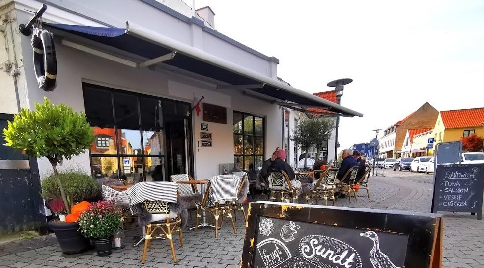

Mikroøkonomi og Halloy
Kapitel 1, 2, 3, 4
Formål:
At forstå hvad der påvirker udbud og efterspørgsel
Anslået tidsforbrug:
5 timer
Forudsætning:
Mikroøkonomi - teori og beskrivelse Kapitel 1, 2, 3, 4
Cafe Halloy i Dragør sælger en stor frisk Lakse-salat med koldhævet
spelt-flutes. Kostprisen for salaten er signifikant højere end de andre produkter på
menuen pga. de dyrere råvarer i form af laks og grønne asparges.
Herunder ses de estimerede omkostninger ved at producere Laksesalaten:
| Stk | VO | FO | TO | GROMK | VE | TE |
| 0 | 0 | 2000 | 2000 | - | - | - |
| 20 | 800 | 2000 | 2800 | 40 | 40 | 140 |
| 40 | 1400 | 2000 | 3400 | 30 | 35 | 85 |
| 60 | 1800 | 2000 | 3800 | 20 | 30 | 63 |
| 80 | 2000 | 2000 | 4000 | 10 | 25 | 50 |
| 100 | 3200 | 2000 | 5200 | 60 | 32 | 52 |
Efterspørgselsfunktionen er: P = -2Q + 160
Hvor P er prisen i kr. og Q er antal salater pr. dag.